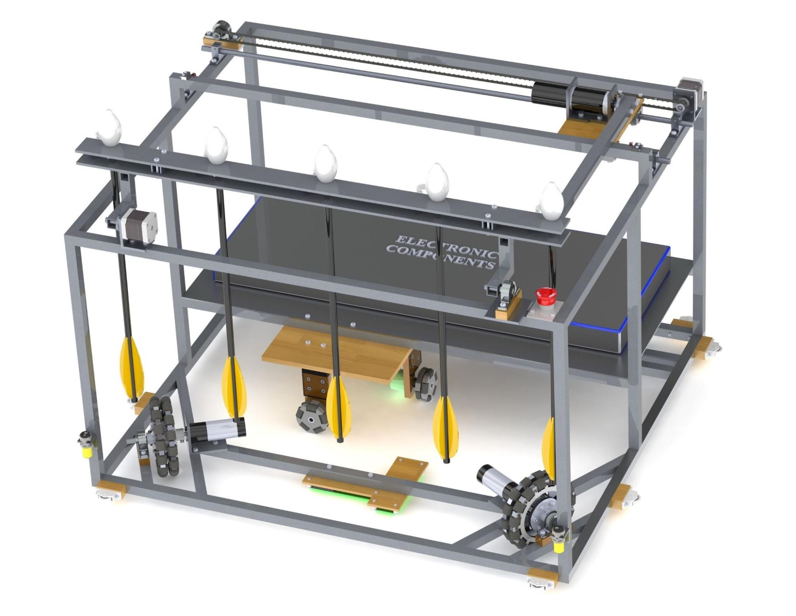
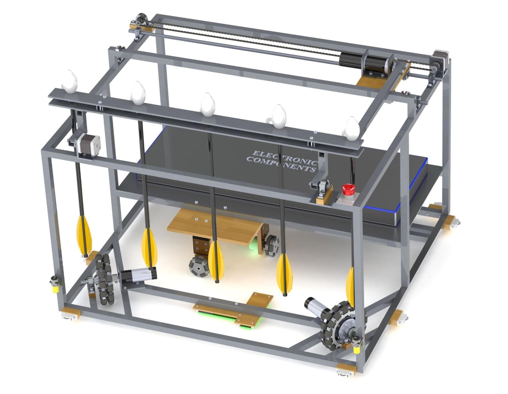

What is ROBOCON?
The ABU Asia-Pacific Robot Contest (ABU Robocon) is an Asian-Oceanian
college robot competition. Robots compete to complete a task within a
set period, usually 3 minutes. The competition has over 20 countries in
its domain, influencing and imbibing the flame of robotics among the
youth. Each year the competition has a different problem statement based
on the hosting country's culture or global problems. There are two
phases to the competition: the national round, which selects the college
or team that will represent the nation abroad, and the final round,
which takes place the last week of August each year. Twenty nations
compete in the ultimate round.
Since 2002, Team DRISHTI has participated in DD Robocon and set a higher
benchmark for itself each year.
Team Drishti representing NIT Surat has been participating in this
competition since 2002 and has set a higher benchmark for itself each
year. In Robocon 2018, team Drishti ranked 12th on the national stage
among 108 nationwide. In Robocon 2019, we ranked 13th on the national
stage. In Robocon 2020, we achieved a score of 98/100 and were among the
79 teams out of 93 who cleared the first round. In Robocon 2021, for the
first time in 16 years of Drishti participating in Robocon, we scored
100/100 for the round one submission.
In Robocon 2022 we scored 97/100 in stage 1. In 2023, after successfully
clearing stage 1 and 2, we were ranked 21st among 40 teams nationwide in
stage 3 held at IIT Delhi.

 
